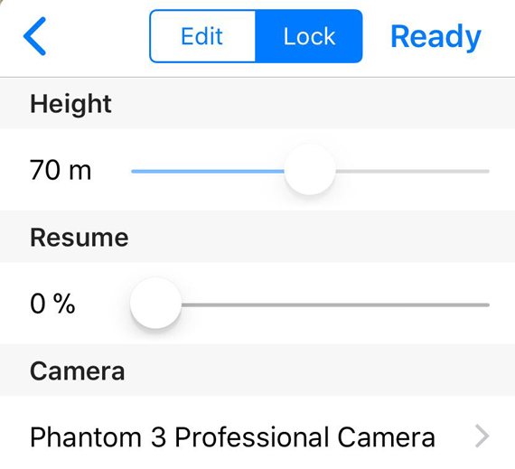

Mission Settings (for iOS)
Flight Area & Flight Paths
In Altizure app, the green rectangle represents the area that will be captured and built into a 3D model. The gray semi-transparent polygon indicates the region that the aircraft will possibly fly over in the 5 flight missions automatically set by the app. When setting the flight area, users should keep it away from high-rise buildings or mountains, as well as No-Fly Zones.
The white polyline on the map represents a flight route/ path with a white arrow at each end, indicating the start point and the end point of the route.
Basic Settings
Mission Settings panel:

Flight Altitude
If we regard the altitude of the takeoff point as 0, you can set the Flight Altitude between 10m and 500m. For safety reasons, users should make sure that the flight altitude is higher than the obstacles within or around the flight area.
Note: The maximum flight altitude is also restricted to the Maximum Flight Altitude in DJI Go. So, before making flight plans, please check or revise relevant settings in DJI Go.
Camera
Different cameras have different angles of view (AOV). To ensure the image quality and photo-taking efficiency of a flight, users need to choose the right camera for their drones.
Note: Some cameras use different lens, e.g. Zenmuse X5S. The Camera List in Altizure app has only listed the default/ commonly-seen lenses. If you are using a lens with a different focal length, please choose the right camera and fill in relevant parameters.
Resume Mission
You can change the takeoff point by using this function.
When mapping large areas, a mission often requires more than one battery and somtimes, the mission might be interrupted midway due to unpredictable situations. Under such circumstances, users can skip the parts that have already captured by adjusting the Percentage in Resume setting.
How to use it: Observe the location of the white arrow on the flight route, and adust this option. When sliding the progress bar, you might discover that the white arrow representing the starting point of the flight path will blink and move along the route as you slide. The parts that you have already skipped will become bleak. This shows, when you execute the same mission next time, the aircraft will go to the adjusted starting point and skipped the parts that you have already captured.
During the mission, the software will automatically adjust this value in accordance with the mission progress. The white arrow on the map will also blink as the mission continues. This means that Altizure app has saved the progress of the task so that the mission can be continued from the place where it stopped next time.
Advanced Settings
On Signal Lost
Sometimes, the remote controller signal might be interrupted during flight mission. This option is to set the aircraft behavior in Signal Lost. In order to meet the needs of various users, we have provided the following two options:
- Quit the mission when the drone loses its signal (default)
- Continue the mission when the drone loses its signal (dangerous, not recommended)
In normal situations, users should keep the setting as default, i.e. Quit the mission when the drone loses its signal. If you really want to enable this option, please read the warnings under this option and the illustrations of Signal Lost and Low Battery situations in Flight Safety carefully.
Forward Overlap & Side Overlap
Overlap is the amount by which one photograph includes the area covered by another photograph, and is expressed as a percentage. Forward Overlap: Overlap area between photos along the same flight line. Side Overlap: Overlap area between photos on adjacent flight lines.
Last modified at Tue May 22 2018 13:28:19 GMT+0800 (HKT)